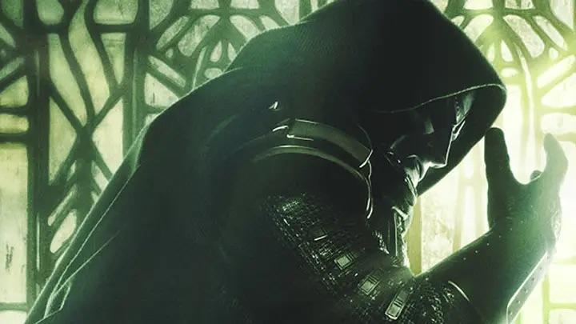

Doomsday : l'homme qui était Iron Man revient en méchant
Marvel sort l'artillerie lourde pour finir l'année. Avec Avengers: Doomsday, le studio mise tout sur un twist que personne n'avait vu venir — et sur un retour que tout le monde attendait.

Le twist que personne n'attendait
Robert Downey Jr., celui qui incarnait Iron Man pendant plus de dix ans, revient non pas en héros mais en méchant : le Docteur Fatalis. Pour une saga entièrement bâtie sur son visage de gentil, voir l'acteur réapparaître sous le masque du grand antagoniste, c'est un pari culotté. Marvel parie que notre attachement au personnage va se retourner contre nous — et ça pourrait très bien fonctionner.
Derrière la caméra, pas de surprise en revanche : ce sont Anthony et Joe Russo qui réalisent, les mêmes que Infinity War et Endgame. Autrement dit, les seuls qui ont déjà prouvé qu'ils savaient faire tenir une centaine de personnages dans un même film sans que tout parte en morceaux. Sortie prévue à la mi-décembre.
Un film-carrefour
Doomsday n'est pas un film isolé, et c'est tout le projet. Il réunit sur le même terrain les Avengers, les Thunderbolts, les Quatre Fantastiques et les X-Men — des équipes qui, jusqu'ici, n'avaient jamais partagé l'écran. Pour les fans, c'est le genre de collision qu'on n'espérait plus voir.
Le pari du méchant parfait
Un film de super-héros ne vaut jamais plus que son antagoniste, et c'est précisément là que Marvel a longtemps péché : des méchants interchangeables, oubliés dès le générique, de simples obstacles sur le chemin des héros. En confiant cette fois le rôle du grand méchant à l'acteur le plus aimé de toute la saga, le studio change complètement les règles. On ne regardera pas Fatalis comme une menace anonyme de plus : on le regardera avec dix ans de souvenirs attachés à ce visage. Chaque réplique, chaque geste portera le poids de tout ce que Downey Jr. représentait avant. Fatalis pourrait devenir le premier méchant du studio qu'on a autant envie de voir gagner que de voir tomber. Et c'est exactement ce malaise, cette hésitation du spectateur entre l'affection et la peur, qui pourrait faire de ce film quelque chose de plus grand qu'un simple blockbuster de fin d'année.
Rendez-vous en décembre
D'ici là, une chose est sûre : on va beaucoup en entendre parler. Les bandes-annonces vont tomber au compte-gouttes, chaque plan sera décortiqué image par image, chaque rumeur de casting enflammera les réseaux pendant des jours. C'est devenu un rituel : avant même d'exister vraiment, un film Marvel de cette ampleur vit déjà sa vie dans les théories des fans. Les dates peuvent encore bouger côté studio, comme souvent, et il faudra sans doute s'armer de patience. Mais l'ambition, elle, est posée, et elle est immense. C'est le film que Marvel prépare depuis des années — celui qui doit rappeler pourquoi, pendant une décennie, le monde entier s'est déplacé en salle pour ces personnages. Décembre dira s'il était à la hauteur de l'attente, ou si la magie, cette fois, a fini par s'épuiser.
En confiant son méchant à l'homme qui fut Iron Man, Marvel joue avec nos souvenirs. Et c'est peut-être son coup le plus malin depuis des années.